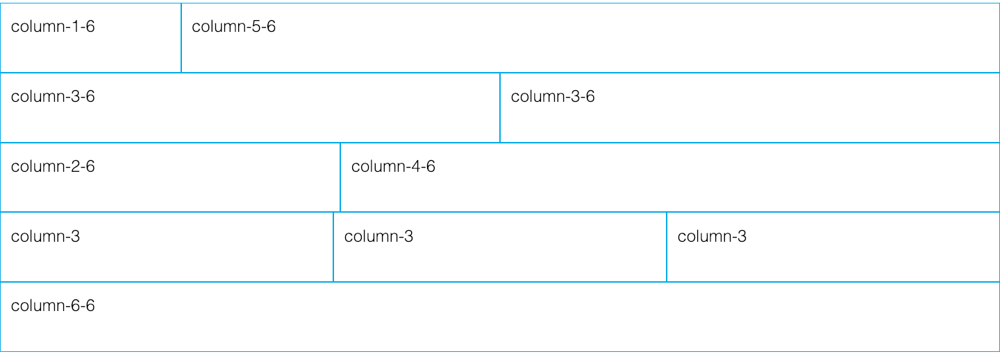
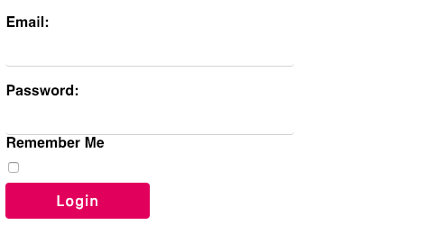

Free and open source by Delveri Chick
/*Files*/
flash.css
flash.min.css
<link rel="stylesheet" href="flash.min.css" >
<link rel="stylesheet" href="flash.min.css" >
The source files of Flash are available on Github for download and customization
.Costomization of flashcss means making changes to the source and rebuilding it before using in your website
1 Create a new*.scss file
2 Override variables in /src/partials/*.scss
3 Include src/flash.scss last before rebuilding by running npm run pack
Build files will be written to the build directory
build/flash.css
Flash provides utility classes for placing navigation bar itams on different positions. We currently have support for the 3 main positions below
Flash Ships with a 6 column responsive grid system.
Create a flash container to contain the grid columns
.flash-container
Add columns to the flash container using one of the defined column configurations
.column-1-6, .column-2-6, column-3-6, column-4-6, column-5-6, column-6-6
You can also use the shorthand classes to create the columns
.column-1, .column-2, .column-3, .column-4, .column-5, .column-6
Demo
Section is a container component used to create aligned columns that follow the container layout
Use .flash-section to create a page section that occupies 100% of its container.
.flash-section-primary: Creates section with primary theme background
.flash-section-secondary : Creates section with secondary theme background
.flash-section-large: Creates a larger section container
Use the following classes with form inputs
Use .flash-form or .flash-block-form
Use .flash-form-inline to create an inline display form
Use .flash-bare-input on input items to create bare form input form fields as seen above
Use the following visibility classes to hide/show elements at the different breakpoints.
flash-hide@xsflash-hide@smlfash-hide@mdflash-hide@lg Override the visibility classes in the source files in src/_visibility.scss
Flash provides animations that add a better user experience to our components. Animations are defined in classes and all animation classes follow the pattern @-[animation-type].
Flash animations can be applied to any element to animate it.
@-flash-out@-flash-in@-slide-left@-slide-in-top@-slide-in-bottom You can also modify the animation behaviour by changing he duration in src/_utils.scss
Click buttons to see animation
© 2019 Please download the source from Github to make changes.